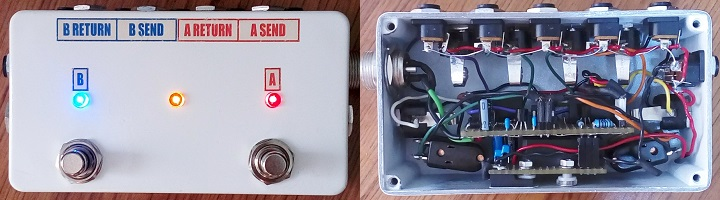
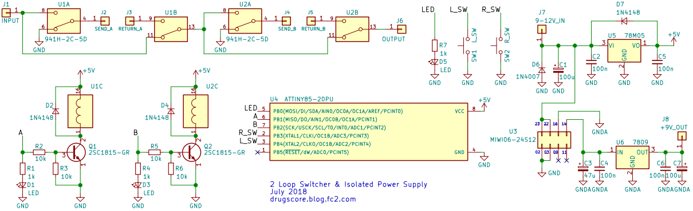
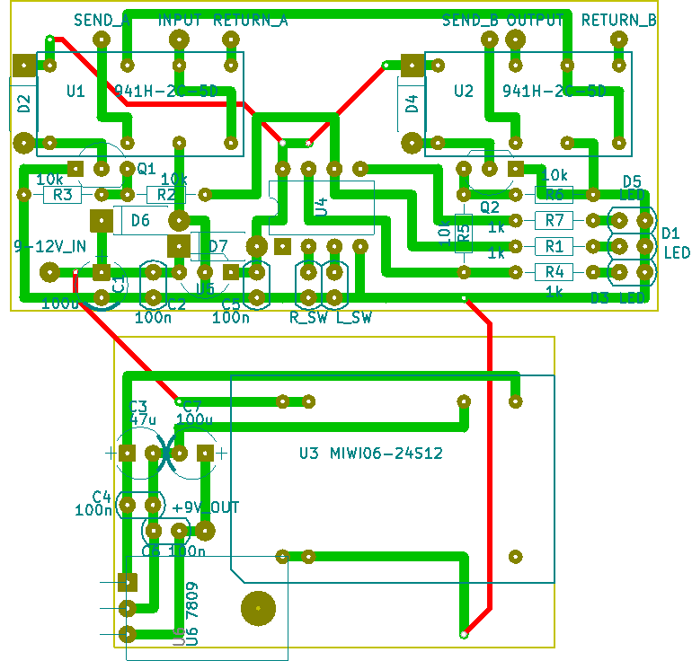

2ループスイッチャー＋絶縁型パワーサプライ
2018年06月28日 カテゴリー：自作エフェクター（アナログ）

直列可2ループボックス+パワーサプライのスイッチが経年劣化のためか接触不良となっていました。もう一度配線をやり直す気にはなれなかったので、AVRマイコンを使ったスイッチャーとして生まれ変わらせました。当初はアナログスイッチICを使おうと思っていましたが、バッファーが必要で複雑になりすぎるようです。普通にメカニカルリレーを使うことにして、ついでにパワーサプライ部分はなんとなく絶縁型へと変更しました。
▽回路図

マイコンはATtiny13Aだとプログラムメモリが足りないので、ATtiny85です。ATtiny13Aの使用方法と同様に、Arduino IDEをATtiny85にも対応させます。参考ページ→Arduino IDE で ATtiny 他の開発
5Vレギュレーターは念のため78M05としていますが、9V入力であれば78L05でも大丈夫でしょう。リレー941H-2C-5Dのコイル駆動電流は30mAで、マイコンから直接流し続けるのは無理があるため、トランジスタを使用します。
▽レイアウト（KiCadデータはこちらへ）

パワーサプライ部分は別基板となっています。絶縁型DC-DCコンバータが大きいので内部がかなり窮屈になってしまいました。
▽Arduinoスケッチ（133行）
const int L_SW_PIN = 4;
const int R_SW_PIN = 3;
const int A_PIN = 1;
const int B_PIN = 2;
const int LED_PIN = 0;
int mode = 0; // 0→マニュアル 1→ex1 2→ex2
int L_sw_value = 0;
long L_sw_count = 0;
int R_sw_value = 0;
long R_sw_count = 0;
boolean A_state = false;
boolean B_state = false;
void setup() {
pinMode(L_SW_PIN, INPUT_PULLUP);
pinMode(R_SW_PIN, INPUT_PULLUP);
pinMode(A_PIN, OUTPUT);
pinMode(B_PIN, OUTPUT);
pinMode(LED_PIN, OUTPUT);
digitalWrite(A_PIN, HIGH); // 電源オン時LED点灯
delay(300);
digitalWrite(LED_PIN, HIGH);
delay(300);
digitalWrite(B_PIN, HIGH);
delay(300);
digitalWrite(A_PIN, LOW);
digitalWrite(LED_PIN, LOW);
digitalWrite(B_PIN, LOW);
}
// ループをオン
void on_A() {
A_state = true;
digitalWrite(A_PIN, HIGH);
}
void on_B() {
B_state = true;
digitalWrite(B_PIN, HIGH);
}
// ループをオフ
void off_A() {
A_state = false;
digitalWrite(A_PIN, LOW);
}
void off_B() {
B_state = false;
digitalWrite(B_PIN, LOW);
}
// ループのオンオフ切替
void chg_A() {
if(A_state) {
off_A();
} else {
on_A();
}
}
void chg_B() {
if(B_state) {
off_B();
} else {
on_B();
}
}
void loop() {
// 中央LEDの処理
if (mode == 0) {
digitalWrite(LED_PIN, LOW);
} else {
digitalWrite(LED_PIN, HIGH);
}
L_sw_value = digitalRead(L_SW_PIN);
if (L_sw_value == LOW) {
L_sw_count += 1;
} else {
L_sw_count = 0;
}
R_sw_value = digitalRead(R_SW_PIN);
if (R_sw_value == LOW) {
R_sw_count += 1;
} else {
R_sw_count = 0;
}
// 左フットスイッチ短押
if (L_sw_count == 10) {
if (mode == 0) {
chg_B();
} else if (mode == 1) {
mode = 2;
on_A();
on_B();
} else {
mode = 1;
off_A();
on_B();
}
}
// 右フットスイッチ短押
if (R_sw_count == 10) {
if (mode == 0) {
chg_A();
} else if (mode == 1) {
chg_A();
chg_B();
} else {
mode = 1;
on_A();
off_B();
}
}
// 左フットスイッチ長押
if (L_sw_count == 1000) {
if (mode == 0) {
mode = 1;
if(A_state) {
off_B();
} else {
on_B();
}
}
}
// 右フットスイッチ長押
if (R_sw_count == 1000) {
if (mode == 0) {
} else {
mode = 0;
off_A();
off_B();
}
}
delay(1);
}
▽操作方法
・マニュアルモード（中央LED消灯）
左スイッチ： ループBのオンオフ切替、長押しで特殊モードへ
右スイッチ： ループAのオンオフ切替
・特殊モード（中央LED点灯）
左スイッチ： ループA→ループBの順で直列接続
※直列切替後は右スイッチでAのみ、左スイッチでBのみオンの状態に戻る
右スイッチ： ループAのみオンとループBのみオンを切り替え、長押しでマニュアルモードへ